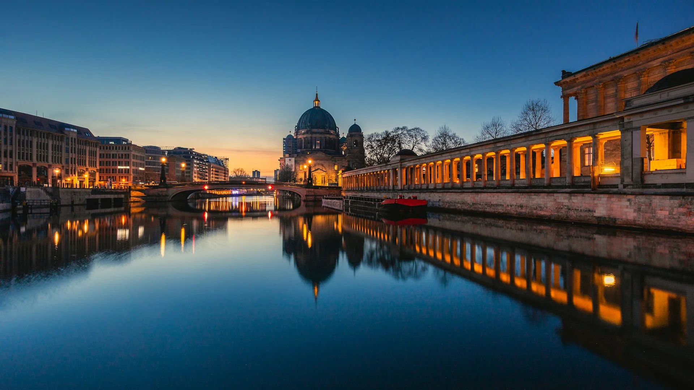
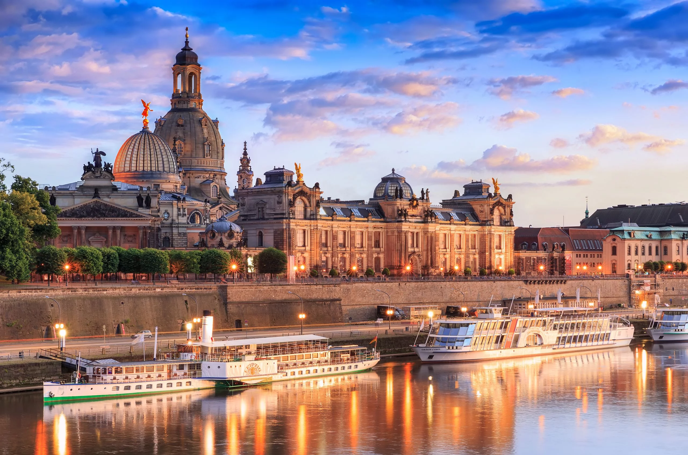
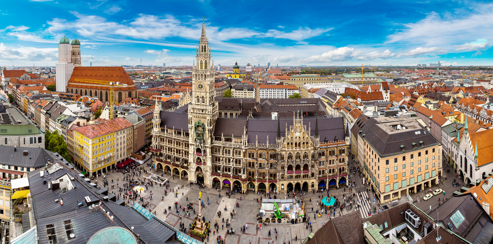
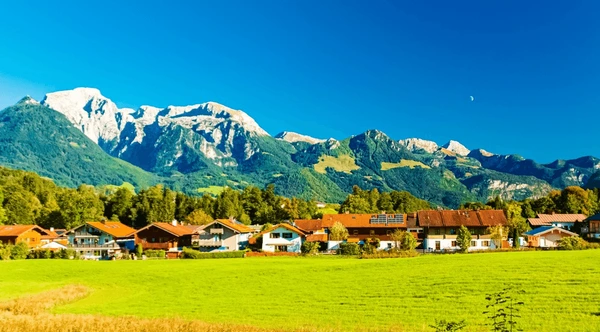

Берлін → Дрезден → Мюнхен → Альпи
Від столиці до засніжених вершин Альп
📍 Berlin — місто контрастів і свободи

Берлін — це місто, де історія відчувається на кожному кроці. Залишки Берлінського муру, Бранденбурзькі ворота і меморіал Голокосту нагадують про складне минуле. Але сучасний Берлін — це також світова столиця вуличного мистецтва, дизайну та нічного життя. Музейний острів, ринки та нескінченна кількість кафе роблять місто ідеальним для дослідження.
Вайб: історія + мистецтво + свобода
📍 Dresden — Флоренція на Ельбі

Дрезден — одне з найкрасивіших міст Германії, яке після майже повного знищення у Другій світовій війні було відновлено у всій своїй бароковій красі. Frauenkirche, Zwinger та Дрезденська картинна галерея з Сікстинською Мадонною Рафаеля зберігають скарби світового мистецтва. Місто на берегах Ельби вражає своєю елегантністю.
Вайб: бароко + мистецтво + елегантність
📍 Munich — серце Баварії

Мюнхен — столиця Баварії і місто, де традиції поважають так само, як і прогрес. Marienplatz з годинниковою вежею Glockenspiel, пивний сад Englischer Garten і знаменитий Октоберфест. Тут знаходяться штаб-квартира BMW та чудові музеї. Мюнхен — ідеальна база для поїздок в Альпи та замок Нойшванштайн.
Вайб: традиції + пиво + баварський дух
📍 Баварські Альпи — природа, яка вражає

Баварські Альпи — це один із найкрасивіших природних регіонів Європи. Казковий замок Neuschwanstein, що надихнув Діснея на створення замку Попелюшки. Озеро Königssee з кришталево чистою водою та гора Zugspitze — найвища точка Німеччини. Взимку — найкращі гірськолижні курорти, влітку — неймовірні хайкінг-маршрути.
Вайб: природа + пригоди + казка
✨ Чому варто обрати цей маршрут
Ця подорож — Германія від А до Я:
- Берлін — динамічна столиця з багатою історією і яскравою культурою.
- Дрезден — барокова краса і найкращі художні колекції.
- Мюнхен — баварські традиції, пиво і ворота до Альп.
- Альпи — казкові пейзажі, замки і незабутня природа.
Корисні посилання для планування подорожі
🏨 Забронювати готель
Вибери дати — і ми знайдемо кращі варіанти в кожному місті маршруту